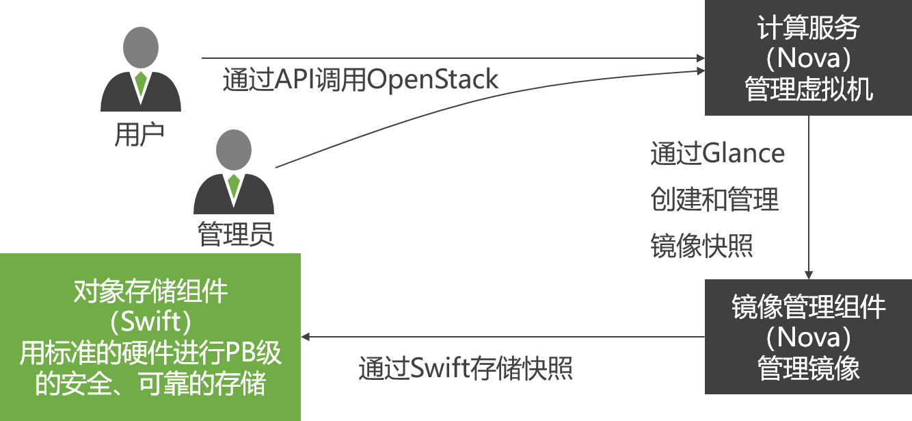

虚拟化技术是伴随着计算机的出现而产生和发展起来的，虚拟化意味着对计算机（IT）资源的抽象。
虚拟化技术已经成为构建云计算环境的两大支柱技术之一。
20世纪60年代，IBM公司推出虚拟化技术
主要用于当时的IBM大型机的服务器虚拟化
虚拟化技术的核心思想是利用软件或固件管理程序构成虚拟化层，把物理资源映射为虚拟资源。在虚拟资源上可以安装和部署多个虚拟机，实现多用户共享物理资源。
虚拟化技术是伴随着计算机的出现而产生和发展起来的，虚拟化意味着对计算机（IT）资源的抽象。
虚拟化技术已经成为构建云计算环境的两大支柱技术之一。
20世纪60年代，IBM公司推出虚拟化技术
主要用于当时的IBM大型机的服务器虚拟化
虚拟化技术的核心思想是利用软件或固件管理程序构成虚拟化层，把物理资源映射为虚拟资源。在虚拟资源上可以安装和部署多个虚拟机，实现多用户共享物理资源。
随着云计算的发展，传统的数据中心逐渐过渡到虚拟化数据中心，即采用虚拟化技术将原来数据中心的物理资源进行抽象整合。
实现资源的动态分配和调度，提高现有资源的利用率和服务可靠性
提供自动化的服务开通能力，降低运维成本
具有有效的安全机制和可靠性机制，满足公众客户和企业客户的安全需求
方便系统升级、迁移和改造
服务器虚拟化
将一个或多个物理服务器虚拟成多个逻辑上的服务器
存储虚拟化
把分布的异构存储设备统一为一个或几个大的存储池
网络虚拟化
在底层物理网络和网络用户之间增加一个抽象层
虚拟化容器
在同一个系统上，实现资源隔离与重用，在不同设备上模拟同一环境
一个物理的服务器虚拟成若干个独立的逻辑服务器，比如分区；
把若干分散的物理服务器虚拟为一个大的逻辑服务器，比如网格技术；
根据虚拟化后的服务器和物理机之间的关系，可以分为两个层次：
寄居虚拟化的虚拟化层一般称为虚拟机监控器（VMM）
就操作系统层的虚拟化而言，没有独立的Hypervisor层
这类虚拟化架构系统损耗比较大
架构中的VMM也可以认为是一个操作系统，一般称为Hypervisor
Hypervisor实现从虚拟资源到物理资源的映射
Hypervisor实现了不同虚拟机的运行上下文保护与切换，保证了各个客户虚拟系统的有效隔离
VMM、GuestOS、GuestApplications都是运行在Ring 1-3用户态中的应用程序代码。
而CPU的特权指令只能在Ring 0层的内核态才能执行。
当在GuestOS中执行系统内核的特权指令时，一般都会触发异常。
为了解决这个问题，虚拟化提出了两种方案：
不需要对GuestOS操作系统软件的源代码做任何的修改，就可以运行在这样的VMM中
GuestOS并不知道自己是一台虚拟机，它会认为自己就是运行在计算机物理硬件设备上的HostOS
在触发了异常之后，这些异常就会被VMM捕获，再由VMM将这些特权指令进行虚拟化成为只针对虚拟CPU起作用的虚拟特权指令。
缺陷：会存在一部分特权指令运行在Ring 1用户态上，而这些运行在Ring 1上的特权指令并不会触发异常然后再被VMM捕获。从而导致在GuestOS中执行的特权指令直接对HostOS造成了影响(即GuestOS和HostOS没能做到完全隔离)。
硬件辅助的全虚拟化
CPU厂商们发布了能够判断特权指令归属的标准x86 CPU之后，可以实现硬件辅助的全虚拟化
硬件辅助全虚拟化主要使用了支持虚拟化功能的CPU进行支撑，CPU可以明确的分辨出来自GuestOS的特权指令，并针对GuestOS进行特权操作，而不会影响到HostOS。
需要对GuestOS的内核代码做一定的修改，才能够将GuestOS运行在半虚拟化的VMM中。
半虚拟化通过在GuestOS的源代码级别上修改特权指令来回避上述的虚拟化漏洞。
修改内核后的GuestOS也知道自己就是一台虚拟机。所以能够很好的对核心态指令和敏感指令进行识别和处理，但缺点在于GuestOS的镜像文件并不通用。
虚拟机迁移是将虚拟机实例从源宿主机迁移到目标宿主机，并且在目标宿主机上能够将虚拟机运行状态恢复到其在迁移之前相同的状态，以便能够继续完成应用程序的任务。
虚拟机迁移可以从不同的角度来进行分类
从虚拟机迁移的源与目的地角度可分为
从虚拟机迁移时的状态可以分为：
实时迁移（LiveMigration），就是保持虚拟机运行的同时，把它从一个计算机迁移到另一个计算机，并在目的计算机恢复运行的技术。
实时迁移的时机：
云计算中心的物理服务器负载经常处于动态变化中，当一台物理服务器负载过大时，若此刻不可能提供额外的物理服务器，管理员可以将其上面的虚拟机迁移到其他服务器，达到负载平衡
云计算中心的物理服务器有时候需要定期进行升级维护，当升级维护服务器时，管理员可以将其上面的虚拟机迁移到其他服务器，等升级维护完成之后，再把虚拟机迁移回来
步骤1：预迁移（Pre-Migration）
步骤2：预定资源（Reservation）
步骤3：预复制（InterativePre-Copy）
步骤4：停机复制（Stop-and-Copy）
步骤5：提交（Commitment）
步骤6：启动（Activation）
存的迁移是虚拟机实时迁移最困难的部分，也是最大的障碍
|
迁移方案 |
优势与劣势 |
|
Stop-and-Copy |
l方法比较简单 l总迁移时间也最短 l停机时间无法接受 |
|
Stop-and-Copy和Pull阶段结合 |
l停机时间很短 l总迁移时间很长 lPull阶段复制造成的性能下降 |
|
Push和Stop-and-Copy阶段结合 |
l平衡了停机时间和总迁移时间之间的矛盾 l需要有一种算法能够测定工作集，以避免反复重传 l可能会占用大量的网络带宽，对其他服务造成影响 |
迁移存储设备的最大障碍在于需要占用大量时间和网络带宽，通常的解决办法是以共享的方式共享数据和文件系统，而非真正迁移。
目前大多数集群使用NAS（Network Attached Storage，网络连接存储）作为存储设备共享数据。
NAS实际上是一个带有瘦服务器的存储设备，其作用类似于一个专用的文件服务器。
在局域网环境下，NAS已经完全可以实现异构平台之间，如NT、UNIX等的数据级共享。
分布式存储的迁移更加简单
容器技术更多的是和虚拟机技术hypervisor来进行对比
传统的虚拟机技术，创建环境和部署应用都很麻烦，而且应用的移植性也很繁琐，
比如你要把VMware里的虚拟机迁移到KVM里就很繁琐（需要做镜像格式的转换）
容器技术主要有三个特点：
容器世界里并不是只有docker一家。既然不是一家就很容易出现分歧。任何技术出现都需要一个标准来规范它，不然各搞各的很容易导致技术实现的碎片化，出现大量的冲突和冗余。
2015年，由Google，Docker、CoreOS、IBM、微软、红帽等厂商联合发起的OCI（Open Container Initiative）组织成立了，并于2016年4月推出了第一个开放容器标准。
标准主要包括runtime运行时标准和image镜像标准。
标准的推出，有助于替成长中市场带来稳定性，让企业能放心采用容器技术，用户在打包、部署应用程序后，可以自由选择不同的容器Runtime；同时，镜像打包、建立、认证、部署、命名也都能按照统一的规范来做。
容器运行时标准 （runtime spec）
容器镜像标准（image spec）
Docker 是一个开源的应用容器引擎，基于 Go 语言 并遵从 Apache2.0 协议开源。
Docker 可以让开发者打包他们的应用以及依赖包到一个轻量级、可移植的容器中，然后发布到任何流行的 Linux 机器上，也可以实现虚拟化。
容器是完全使用沙箱机制，相互之间不会有任何接口（类似 iPhone 的 app）,更重要的是容器性能开销极低。
Docker 从 17.03 版本之后分为两个版本：
Web 应用的自动化打包和发布。
自动化测试和持续集成、发布。
在服务型环境中部署和调整数据库或其他的后台应用。
从头编译或者扩展现有的 OpenShift 或 Cloud Foundry 平台来搭建自己的 PaaS 环境。
Docker 包括三个基本概念:
Docker 使用客户端-服务器 (C/S) 架构模式，使用远程API来管理和创建Docker容器。Docker 容器通过 Docker 镜像来创建。
Image： 镜像是用于创建 Docker 容器的模板，比如 Ubuntu 系统。
Container：容器是独立运行的一个或一组应用，是镜像运行时的实体。
Client：Docker 客户端通过命令行或者其他工具使用 SDK 与 守护进程通信。
Host：一个物理或者虚拟的机器用于执行 Docker 守护进程和容器。
Registry：Docker 仓库用来保存镜像，可以理解为代码控制中的代码仓库。
Machine：简化Docker安装的命令行工具，通过一个简单的命令行即可在相应的平台上安装Docker。
无论是Ubuntu还是CentOs，仓库中软件版本都比较老
推荐使用官方安装脚本自动安装（用阿里云镜像）：
curl -fsSL https://get.docker.com | bash -s docker --mirror Aliyun
无论是Ubuntu还是CentOs安装脚本都是一样的
CentOs安装脚本都是一样的Docker官网：https://www.docker.com （慢！）
Docker 允许你在容器内运行应用程序， 使用 docker run 命令来在容器内运行一个应用程序。
意义Docker 以 ubuntu15.10 镜像创建一个新容器，然后在容器里执行 bin/echo "Hello world"，然后输出结果。
各个参数解析：
通过 docker 的两个参数 -i -t，让 docker 运行的容器实现"对话"的能力
各个参数解析：
可以通过运行 exit 命令或者使用 CTRL+D 来退出容器。
--name参数可以为容器指定一个名字
以进程方式运行的容器
运行结果中看不到期望的 “hello world”
而是一串长字符，这个长字符串叫做容器 ID，对每个容器来说都是唯一的
我们可以通过容器 ID 来查看对应的容器发生了什么
可以通过 docker ps 来查看运行中的容器：
CONTAINER ID: 容器 ID。IMAGE: 使用的镜像。COMMAND: 启动容器时运行的命令。CREATED: 容器的创建时间。
STATUS: 容器状态。
状态有7种：created（已创建）、restarting（重启中）、running 或 Up（运行中）、removing（迁移中）、paused（暂停）、exited（停止）、dead（死亡）
PORTS: 容器的端口信息和使用的连接类型（tcp\udp）。NAMES: 自动分配的容器名称。
-a参数可以查看所有容器。
若一个容器后台运行，我们无法直接看到其执行的输出，但可以通过命令docker logs查看容器内部的输出：
logs后面的参数可以是容器的ID或者容器的名字
docker stop命令可以停止容器
命令的参数可以是容器的ID或者容器的名字
如果我们本地没有 Ubuntu 镜像，我们可以使用 docker pull 命令来从远程仓库中载入 Ubuntu 镜像：
在使用 -d 参数时，容器启动后会进入后台，则无论是否使用-it参数都无法直接交互。
此时可以通过以下指令进入交互模式：
删除容器使用 docker rm 命令：
参数可以是容器的ID或者名字
-f参数表示
容器内程序所监听的端口可以映射到外部（真实机器中）
除了使用docker ps命令可以查看端口映射之外
还可以使用专用命令docker port命令查看
上面的运行结果表明把容器内部的TCP端口5000映射到外部
可以使用 docker top 来查看容器内部运行的进程
命令列出了容器内进程的CPU占用情况，并且按降序排列
可以使用 docker images 来列出本地主机上的镜像
同一仓库源可以有多个 TAG，代表这个仓库源的不同个版本，如 ubuntu 仓库源里，有 15.10、14.04 等多个不同的版本
我们可以从 Docker Hub 网站来搜索镜像
Docker Hub 网址为： https://hub.docker.com/
也可以使用 docker search 命令来搜索镜像：
镜像删除使用 docker rmi 命令，比如我们删除 hello-world 镜像：
有时候从仓库中下载的镜像不完全符合我们的需求，我们可以针对已有镜像进行修改，然后保存成一个全新的镜像：
首先，基于已有镜像启动一个容器，并进入交互模式：
然后，在交互模式下对容器内容进行修改，例如更新系统、新装软件、删除内容等
完成后，输入 exit 命令来退出这个容器，并记住容器的ID
最后，通过命令 docker commit 来提交容器副本：
可以使用 docker tag 命令，为镜像添加一个新的标签：
docker tag 镜像ID，这里是 860c279d2fec ,用户名称、镜像源名(repository name)和新的标签名(tag)
如果多次指定tag，那么同一个镜像会有多个tag
容器中可以运行一些网络应用，要让外部也可以访问这些应用，可以通过 -P 或 -p 参数来指定端口映射。
我们可以指定容器绑定的网络地址，比如绑定 127.0.0.1
在Docker run的时候可以使用-v参数指定将本地路径（真实机器）挂载到容器路径中：
既是一个社区，也是一个项目和一个开源软件，提供了一个部署云的操作平台或工具集。用OpenStack易于构建虚拟计算或存储服务的云，既可以为公有云、私有云，也可以为大云、小云提供可扩展、灵活的云计算。
OpenStack是一个管理计算、存储和网络资源的数据中心云计算开放平台，通过一个仪表板，为管理员提供了所有的管理控制，同时通过Web界面为其用户提供资源。
计算资源管理
OpenStack可以规划并管理大量虚拟机，从而允许企业或服务提供商按需提供计算资源
存储资源管理
OpenStack可以为云服务或云应用提供所需的对象及块存储资源
网络资源管理
IP地址的数量、路由配置、安全规则将爆炸式增长；传统的网络管理技术无法真正高扩展、高自动化地管理下一代网络
OpenStack从发布到现在经历过很多版本
它的版本代号很复杂，但是确有一个有趣的规律：
每个版本的代号，是从A到Z的单词，而这个单词是个地名（OpenStack会议的名字）
OpenStack有三个核心的服务成员：计算服务（Nova）、存储服务（Swift）、镜像服务（Glance）
1．计算服务Nova
2．对象存储服务Swift
3．镜像服务Glance
4．身份认证服务keystone
5．网络管理服务Quantum
6．存储管理服务Cinder
7．仪表盘Horizon
Nova是OpenStack云中的计算组织控制器
Nova处理OpenStack云中实例（instances）生命周期的所有活动。这样使得Nova成为一个负责管理计算资源、网络、认证、所需可扩展性的平台。
但是，Nova并不具有虚拟化能力，相反它使用Libvirt API来与被支持的Hypervisors交互。Nova通过一个与Amazon Web Services（AWS）EC2 API兼容的Web Services API来对外提供服务。
1．API Server（Nova-Api）
API Server对外提供一个与云基础设施交互的接口，也是外部可用于管理基础设施的唯一组件。
2．Message Queue（Rabbit MQ Server）
OpenStack节点之间通过消息队列使用AMQP（Advanced Message Queue Protocol）完成通信。
3．Compute Worker（Nova-Compute）
Compute Worker管理实例生命周期，通过Message Queue接收实例生命周期管理的请求，并承担操作工作。
4．Network Controller（Nova-Network）
Network Controller处理主机的网络配置，包括IP地址分配、为项目配置VLAN、实现安全组、配置计算节点网络。
5．Volume Workers（Nova-Volume）
Volume Workers用来管理基于LVM（Logical Volume Manager）的实例卷。Volume Workers有卷的相关功能，例如新建卷、删除卷、为实例附加卷、为实例分离卷。
6．Scheduler（Nova-Scheduler）
调度器Scheduler把Nova-API调用映射为OpenStack组件。调度器作为一个Nova-Schedule守护进程运行，通过恰当的调度算法从可用资源池获得一个计算服务。
Nova通过独立的软件管理模块实现XenServer、Hyper-V和VMWare ESX的调用与管理
同时对于其他的Hypervisor，如KVM、LXC、QEMU、UML和Xen则通过Libvirt标准接口统一实现
为了更好地理解在Nova环境下Libvirt如何管理底层的Hypervisor，先要基本了解Libvirt的体系架构与实现方法。
各种不同的虚拟化技术都提供了基本的管理工具，比如启动、停用、配置、连接控制台等。这样在构建云管理的时候就存在两个问题。
如果采用混合虚拟技术，上层就需要对不同的虚拟化技术调用不同管理工具，很是麻烦。
可能有新的虚拟化技术更加符合现在的应用场景，需要迁移过去。这样管理平台就需要大幅改动。
Libvirt的主要目标是为各种虚拟化工具提供一套方便、可靠的编程接口，用一种单一的方式管理多种不同的虚拟化提供方式。
虚拟机管理
包括不同的领域生命周期操作，，支持多种设备类型的热插拔操作
远程机器支持
只要机器上运行了Libvirt Daemon，所有的Libvirt功能就都可以访问和使用
存储管理
任何运行了Libvirt Daemon的主机都可以用来管理不同类型的存储,创建不同格式的文件镜像
网络接口管理
任何运行了Libvirt Daemon的主机都可以用来管理物理和逻辑的网络接口。
虚拟NAT和基于路由的网络
任何运行了Libvirt Daemon的主机都可以用来管理和创建虚拟网络。
Swift是一种可扩展的对象存储系统
比如复制和存档数据，图像或视频服务，存储次级静态数据，开发数据存储整合的新应用，存储容量难以估计的数据，为Web应用创建基于云的弹性存储。
提供如下特性：
1.高数据持久性
数据的可靠性，是指数据存储到系统中后，到某一天数据丢失的可能性。
2.完全对称的系统架构
“对称”意味着Swift中各节点可以完全对等，能极大地降低系统维护成本。
3.无限的可扩展性
一是数据存储容量无限可扩展，二是Swift性能（如QPS、吞吐量等）可线性提升。
4.无单点故障
整个Swift集群中，也没有一个角色是单点的，并且在架构和设计上保证无单点业务是有效的。
5.简单、可依赖
简单体现在实现易懂、架构优美、代码整洁；可依赖是指Swift经测试、分析之后，可以放心大胆地将Swift用于最核心的存储业务上
网盘类产品的存储引擎
为Glance存储镜像文件
存储日志文件
数据备份仓库
Glance提供了一个虚拟磁盘镜像的目录和存储仓库，并且可以提供对虚拟机镜像的存储和检索。这些磁盘镜像常常广泛应用于OpenStack Compute组件之中。
三种形式加以配置：
Glance作为OpenStack的虚拟机的Image（镜像）服务，提供了一系列的REST API，用来管理、查询虚拟机的镜像，它支持多种后端存储介质
通过Glance，Opentack的3个模块被链接成了一个整体，Glance为Nova提供镜像的查找操作，而Swift又为Glance提供实际的存储服务，Swift可以看成Glacne存储接口的一个具体实现。
OpenStack Object Storage：它是OpenStack中高可用的对象存储项目。
FileSystem：OpenStack Image Service存储虚拟机镜像的默认后端是后端文件系统。
S3：该后端允许OpenStack Image Service存储虚拟机镜像在Amazon S3服务中。
HTTP：OpenStack Image Service能通过HTTP在Internet上读取可用的虚拟机镜像。